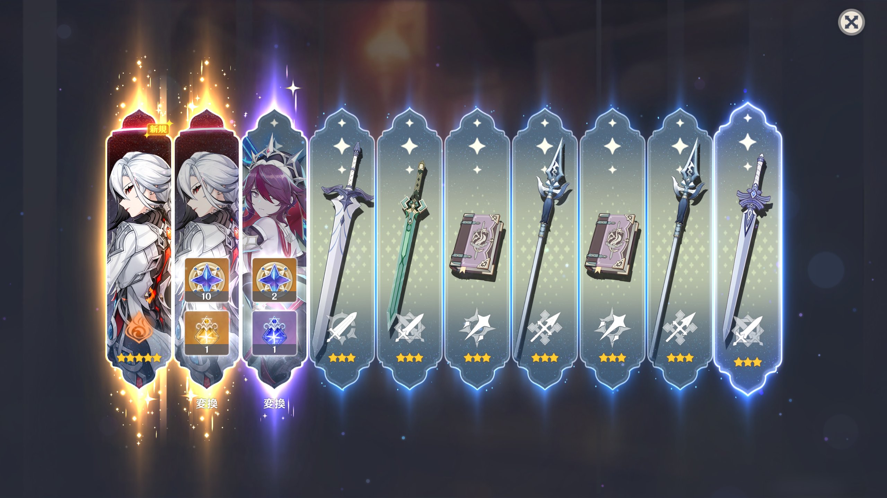

召使とクロリンデをお迎えしました。
2025年2月3日
集録祈願の残り原石と海灯祭の配布原石でガチャを引きました。
召使は2枚引きしてしまいました。実に罪深い2枚引きです。
クロリンデはすり抜けてしまいましたが、トータル60連でお迎えできました。
ついでに赤月のシルエットも引きました。



集録祈願の残り原石と海灯祭の配布原石でガチャを引きました。
召使は2枚引きしてしまいました。実に罪深い2枚引きです。
クロリンデはすり抜けてしまいましたが、トータル60連でお迎えできました。
ついでに赤月のシルエットも引きました。
約45,000原石貯めて挑みました。
目当ての申鶴だけでなく、甘雨もお迎えできました。
さらにアモスまで引けました。
探索が結構快適になりました
タクシーみたいな感じ
探索やデイリー頑張りたい方にはおすすめできます
四風原典をもたせたら移動が更に快適になるらしい(私は未所持)